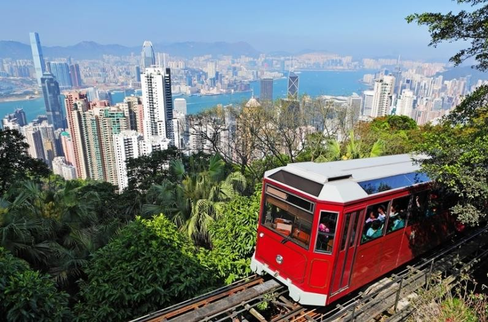

Hong Kong: A Vibrant Fusion of East and West
Hong Kong, a Special Administrative Region of China, is a captivating city where rich history meets dynamic modernity. It began as a small fishing village but grew into a significant British colony in the 19th century. This colonial past has profoundly shaped its legal system, architecture, and certain cultural aspects.
Today, Hong Kong is a global financial hub, renowned for its impressive skyline and towering skyscrapers. It's a vital center for international trade, finance, and business, with a bustling port that facilitates global commerce.
Culturally, Hong Kong is a unique blend of Eastern and Western influences. Traditional Chinese festivals are celebrated with great enthusiasm, while Western-style fashion, art, and entertainment also thrive. With its efficient transportation and diverse accommodation, Hong Kong welcomes travelers worldwide, offering an unforgettable experience of its multifaceted charm.
Hong Kong Highlights
Getting To Hong Kong
By Air
Hong Kong International Airport (HKG) is a major aviation hub, offering flights to destinations across the globe. Numerous international airlines operate here, ensuring convenient access for travelers. The airport also provides extensive facilities, including shopping, dining, and lounges.
By Train
The Guangzhou-Shenzhen-Hong Kong Express Rail Link provides a direct connection to mainland China. The Hong Kong terminus is at the Hong Kong West Kowloon Station. High-speed trains offer a fast and efficient way to travel from major Chinese cities like Guangzhou and Shenzhen.
Getting Around Hong Kong
Hong Kong boasts an excellent public transportation system, making it easy to navigate the city.
MTR (Mass Transit Railway)
The MTR is Hong Kong's primary public transport network. This clean, fast, and reliable subway system covers Hong Kong Island, Kowloon, and the New Territories. The Octopus Card is the most convenient way to pay; this rechargeable smart card is widely accepted on the MTR, buses, trams, and some ferries. Single-trip tickets are also available at MTR stations, and some stations accept mobile payments like AlipayHK and Tap & Go. Trains run frequently throughout the day.
Bus
Hong Kong has an extensive bus network, reaching areas not serviced by the MTR. Bus fares vary by route. Payment can be made with an Octopus Card or cash (exact change required), and some buses accept mobile payments. However, traffic congestion can cause delays, especially during peak hours. Bus routes are clearly signposted in English and Chinese.
Taxi
Taxis are readily available and metered. Red taxis operate throughout Hong Kong, green taxis serve the New Territories, and blue taxis serve Lantau Island. You can hail taxis on the street or find them at taxi stands outside major transport hubs and hotels. Ride-hailing apps like HKTaxi are also available.
Ferry
Ferries are a key mode of transport between Hong Kong Island, Kowloon, and the outlying islands. The Star Ferry is particularly popular for its iconic harbor crossings between Central (Hong Kong Island) and Tsim Sha Tsui (Kowloon), and between Wan Chai (Hong Kong Island) and Tsim Sha Tsui (Kowloon). Ferries operated by New World First Ferry serve the outlying islands, such as Cheung Chau, Mui Wo, and Peng Chau. You can pay with an Octopus Card or purchase tickets at the ferry terminal. Ferry terminals are conveniently located near major tourist attractions.

Tram
The tram runs along the northern part of Hong Kong Island, offering a unique and scenic way to explore the city. The fare is a flat rate, and payment can be made with an Octopus Card or cash.
Peak Tram
The Peak Tram provides access to Victoria Peak. Tickets can be purchased at the Lower Peak Tram Terminus in Central or pre-booked online. Payment options include Octopus Card, credit card, or cash. The tram ride itself offers stunning views as it ascends the mountain.
Famous Attractions
Victoria Peak (The Peak)
As the highest point on Hong Kong Island, Victoria Peak offers panoramic views of the city skyline, Victoria Harbour, and the surrounding landscapes. The Peak Tram ride is a thrilling experience, and the viewing platforms are ideal for capturing photos.
Hong Kong Disneyland
This magical theme park features classic Disney attractions, parades, and shows. Meeting beloved Disney characters and enjoying rides like Space Mountain make it a top destination for family fun and fantasy.
Ocean Park Hong Kong
Ocean Park combines marine animal exhibits with exciting rides. Visitors can enjoy dolphin shows, explore the aquarium, and experience thrilling roller coasters.
The Avenue of Stars
Located along the Tsim Sha Tsui waterfront, the Avenue of Stars celebrates Hong Kong's film industry. It features handprints of famous stars, views of Hong Kong Island, and the Symphony of Lights show.
Po Lin Monastery and the Big Buddha
Situated on Lantau Island, Po Lin Monastery provides a serene and peaceful atmosphere. The Tian Tan Buddha, a large statue, is a major symbol of peace and spirituality. The monastery's beautiful scenery and spiritual significance attract many visitors.
Mong Kok's Fa Yuen Street (Sneaker Street)
This lively street is renowned for its extensive selection of sneakers and sportswear. The bustling stalls, street food vendors, and lively atmosphere offer a glimpse into Hong Kong's everyday life.
Night Markets (Temple Street)
Hong Kong's night markets, such as Temple Street Night Market, are a must-visit. Visitors can browse stalls selling souvenirs, clothing, and local snacks. Bargaining is common and part of the experience.
Delicious Hong Kong
Hong Kong's cuisine is a delightful blend of Cantonese traditions and international influences. Here are some dishes you shouldn't miss:
Dim Sum
Dim sum is a Cantonese culinary tradition featuring a wide variety of small, bite-sized dishes. Dishes like siu mai (pork dumplings) and har gow (shrimp dumplings) are enjoyed as a social dining experience, often served in bamboo steamers.
Hong Kong-style Milk Tea
This popular beverage is made by blending black tea with evaporated milk. It's known for its rich, smooth, and slightly sweet flavor. The "pulling" technique used in its preparation gives it a unique texture.
Egg Tart
These tarts consist of a flaky, buttery crust filled with a smooth, creamy egg custard. The combination of the sweet filling and crispy crust is a classic Hong Kong treat.
Wonton Noodles
This dish features fine wheat noodles served in a flavorful broth with plump wontons filled with pork and shrimp. The broth is typically clear and rich, often made from pork bones.

Pineapple Bun
Despite its name, this bun doesn't contain pineapple. It has a sweet, crumbly topping that resembles the texture of a pineapple. It's commonly eaten plain or with a slab of butter.
Curry Fish Balls
These are fish balls made from minced fish and cooked in a fragrant curry sauce. They are chewy, flavorful, and often sold at street stalls on skewers.
Roast Goose
The goose is marinated with seasonings and roasted to achieve a crispy, golden-brown skin. The meat is tender, juicy, and savory. It's usually served with plum sauce.
Mango Sago with Pomelo
This is a refreshing dessert made with sweet mango puree, chewy sago pearls, and slightly bitter pomelo pieces. The contrasting textures and flavors create a delightful treat, especially popular during warmer months.
Where to Stay
Central & Admiralty (Hong Kong Island)
The business and financial heart. Offers luxury hotels, fine dining, and high-end shopping. Excellent transport links via MTR. Close to attractions like Victoria Peak.
Tsim Sha Tsui (Kowloon)
A vibrant tourist hub with stunning harbor views. Wide range of hotels, shopping malls (Harbour City), museums, and the Avenue of Stars. Easily accessible by MTR and Star Ferry.
Causeway Bay (Hong Kong Island)
Known for its bustling shopping streets (Times Square) and diverse dining options. Offers mid-range to luxury hotels. Well-connected by MTR and trams.
Mong Kok (Kowloon)
A lively, densely populated area famous for its markets (Ladies' Market, Sneaker Street) and local eateries. Offers more budget-friendly accommodation options. Great for experiencing local life.
Weather Guide
Cool and Dry (Dec - Feb)
Around 15°C - 20°C (59°F - 68°F). Pleasant, sunny days are common. Light jacket, sweaters needed, especially in the evenings.
Warm and Humid (Mar - May)
20°C - 27°C (68°F - 81°F). Increasing humidity, occasional fog and rain. Light clothing, maybe a light jacket. Umbrella useful.
Hot and Humid with Typhoons (Jun - Aug)
Above 28°C (82°F), often exceeding 31°C (88°F). Very high humidity, frequent rain, and potential typhoons. Light, breathable clothing. Stay updated on weather warnings.
Pleasant and Sunny (Sep - Nov)
23°C - 28°C (73°F - 82°F). Considered the best time to visit. Comfortable temperatures, lower humidity, sunny days. T-shirts, light trousers. Light jacket for later in the season.
Must-Do List
- Take the Peak Tram up to Victoria Peak for stunning city views.
- Ride the iconic Star Ferry across Victoria Harbour.
- Experience the magic at Hong Kong Disneyland or Ocean Park.
- Indulge in a traditional Dim Sum meal.
- Stroll along the Avenue of Stars and enjoy the Symphony of Lights.
- Explore the bustling streets and markets of Mong Kok.
- Visit the Po Lin Monastery and the Big Buddha on Lantau Island.
- Try Hong Kong-style Milk Tea and Egg Tarts.
- Ride the historic double-decker tram on Hong Kong Island.
- Shop for bargains at the Temple Street Night Market.
- Hike one of Hong Kong's scenic trails (e.g., Dragon's Back).
- Enjoy fresh seafood on an outlying island like Lamma or Cheung Chau.
- Visit a traditional wet market to see local life.
- Savor delicious Roast Goose.
Classic Tour Itineraries
Three-Day Highlights Route
Day 1: Arrive, check in (Tsim Sha Tsui). Explore Tsim Sha Tsui waterfront, Avenue of Stars. Star Ferry to Central. Peak Tram to Victoria Peak for sunset/night views. Dinner in Central/SoHo.
Day 2: Morning Dim Sum. MTR to Lantau Island. Ngong Ping 360 Cable Car (optional) to Big Buddha & Po Lin Monastery. Return. Evening explore Mong Kok markets (Ladies' Market, Temple Street).
Day 3: Ride the tram on Hong Kong Island (Causeway Bay/Wan Chai). Explore local neighborhoods. Shopping or visit a museum (e.g., Hong Kong Museum of History). Depart.
Four-Day Family Fun Route
Day 1: Arrive, check in. Afternoon explore hotel area. Star Ferry ride. Symphony of Lights.
Day 2: Full day at Hong Kong Disneyland.
Day 3: Full day at Ocean Park Hong Kong.
Day 4: Morning visit Victoria Peak (daytime view). Last minute souvenir shopping. Depart.
Five-Day Culture & Foodie Route
Day 1: Arrive, check in (Central/Sheung Wan). Explore Hollywood Road (antiques), Man Mo Temple. Dinner in SoHo.
Day 2: Morning Dim Sum. Visit Wong Tai Sin Temple. Explore Sham Shui Po (electronics, fabrics, local food). Evening Temple Street Night Market.
Day 3: Day trip to an outlying island (e.g., Cheung Chau for seafood and cycling, or Lamma Island for hiking and beaches).
Day 4: Peak Tram & Victoria Peak. Explore Causeway Bay (shopping, food). Try local desserts (Mango Sago). Evening explore Wan Chai bars/restaurants.
Day 5: Visit a wet market. Try Wonton Noodles and Roast Goose for lunch. Depart.